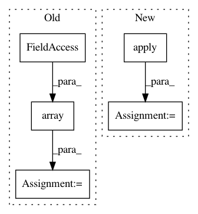

73675264dd48387319f62780b52d81389016cc1f,neurosynth/base/dataset.py,FeatureTable,get_ids,#FeatureTable#Any#Any#Any#Any#,546
Before Change
if isinstance(features, str):
features = [features]
features = self.search_features(features) // Expand wild cards
feature_indices = np.in1d(np.array(self.feature_names), np.array(features))
data = self.data.toarray()
feature_weights = data[:, feature_indices]
weights = eval("np.%s(tw, 1)" % func, {}, {
"np": np, "tw": feature_weights}) // Safe eval
above_thresh = (weights >= threshold)
ids_to_keep = self.ids[above_thresh]
if get_weights:
return dict(zip(ids_to_keep, list(weights[above_thresh])))
else:
return ids_to_keep
After Change
features = [features]
features = self.search_features(features) // Expand wild cards
feature_weights = self.data.ix[:, features]
weights = feature_weights.apply(func, 1)
above_thresh = weights[weights >= threshold]
// ids_to_keep = self.ids[above_thresh]
return above_thresh if get_weights else list(above_thresh.index)
In pattern: SUPERPATTERN
Frequency: 3
Non-data size: 5
Instances
Project Name: neurosynth/neurosynth
Commit Name: 73675264dd48387319f62780b52d81389016cc1f
Time: 2014-03-24
Author: tyarkoni@gmail.com
File Name: neurosynth/base/dataset.py
Class Name: FeatureTable
Method Name: get_ids
Project Name: neurosynth/neurosynth
Commit Name: 73675264dd48387319f62780b52d81389016cc1f
Time: 2014-03-24
Author: tyarkoni@gmail.com
File Name: neurosynth/base/dataset.py
Class Name: FeatureTable
Method Name: get_features_by_ids
Project Name: Pinafore/qb
Commit Name: e79449afe45f4da6f1756a7d92bdd3cd6618c638
Time: 2018-04-25
Author: sjtufs@gmail.com
File Name: qanta/buzzer/util.py
Class Name:
Method Name: process_question